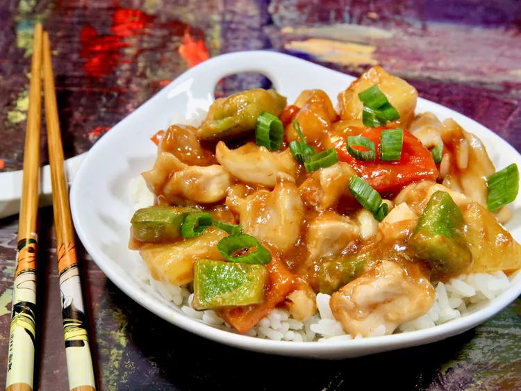

Baked Sweet and Sour Chicken Thighs with Pineapple

Description
This baked sweet and sour chicken made with chicken thighs and pineapple is a "dump" version of one of the most
popular dishes in a Chinese restaurant. Skip the deep frying and bake everything together in one dish to create
a lighter twist on a classic with no sacrifice of flavor.
Ingredients
- 3/4 pound skinless, boneless chicken thighs
- 1 tablespoon cornstarch
- 1/3 cup bite-sized onion chunks
- 1/3 green bell pepper, cut into bite-sized chunks
- 1/3 red bell pepper, cut into bite-sized chunks
- 1/3 cup bite-sized pineapple chunks
- 1/3 cup ketchup
- 2 tablespoons seasoned rice vinegar
- 2 tablespoons brown sugar, or to taste
- 1 tablespoon low-sodium soy sauce
- 1 large clove garlic, minced
- 1/2 teaspoon ginger paste (such as Gourmet Garden™)
- 1 green onion, sliced, or as needed (optional)
Steps
- Preheat the oven to 400 degrees F (200 degrees C). Lightly grease a baking dish or spray with cooking spray.
Pat chicken thighs dry with a paper towel, cut into 1-inch chunks, and add to the dish. Sprinkle with
cornstarch, and toss until chicken is coated. Stir in onions, green and red bell peppers, and pineapple.
- Add ketchup, rice vinegar, brown sugar, soy sauce, garlic, and ginger paste to a small bowl, whisk until
well combined, and stir into the chicken mixture.
- Bake until chicken is no longer pink at the center and juices run clear, 14 to 17 minutes, stirring halfway
through. An instant-read thermometer inserted near the center should read 165 degrees F (74 degrees C). If
sauce is a bit thick, stir in a splash of water to thin out until you reach your desired consistency.
- Garnish with green onion slices and serve.
Home